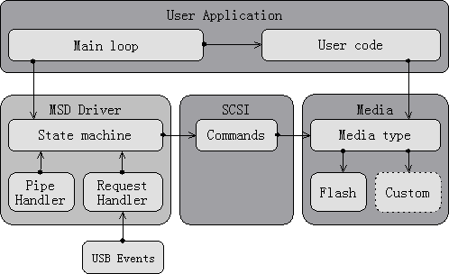
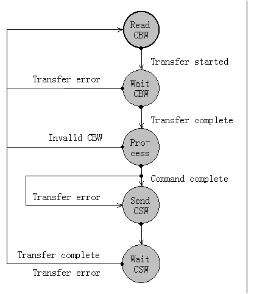

Description
massstorage.dir::USB MSD Driver
This page describes how to use the USB framework to produce a USB MSD driver, which appears as a USB Disk on host.
References
Mass Storage Class Basic
This section gives generic details on the MSD class.
Mass Storage SCSI Disk
This section describes how to implement a USB disk by using the MSD class with the SCSI transparent command set and the AT91 USB Framework. For more information about the framework, please refer to the "AT91 USB
device framework" application note; details about the USB and the Mass Storage class can be found in the USB specification 2.0 and the MSC Bulk-Only Transport specification 1.0 documents, respectively.
The software example provided with this document uses the ram disk of the chip as its storage medium, but has been designed in a modular way to allow easy modification for any medium, e.g. internal
flash, DataFlash, SD card, external Flash chip.
The internal architecture of the Application layer is extended for the following factors:
- The Command/Data/Status flow described in "USB MSD Basic" requires the use of a state machine for non-blocking operation.
- The example software has been designed to be easily extended with support for other media.
- The example software has been designed to support multiple LUNs on one or more media.

Application Layer Architecture
Descriptors
There are no class-specific descriptors for a
device using the MSD class with the Bulk-only transport protocol. This section thus only details the values which must be set in the standard descriptors.
Device Descriptor
static const USBDeviceDescriptor deviceDescriptor = {
sizeof(USBDeviceDescriptor), // bLength: Size of descriptor (18 bytes)
USBGenericDescriptor_DEVICE, // bDescriptorType: Device descriptor
USBDeviceDescriptor_USB2_00, // bcdUSB: USB 2.00
MSDeviceDescriptor_CLASS, // bDeviceClass: 0
MSDeviceDescriptor_SUBCLASS, // bDeviceSubClass: 0
MSDeviceDescriptor_PROTOCOL, // bDeviceProtocol: 0
BOARD_USB_ENDPOINTS_MAXPACKETSIZE(0), // bMaxPacketSize0: Max Size EP0
MSDDriverDescriptors_VENDORID, // idVendor: Vendor ID ATMEL (0x03eb)
MSDDriverDescriptors_PRODUCTID,// idProduct: Product ID (0x6202)
MSDDriverDescriptors_RELEASE, // bcdDevice: 0x0001, Version 0.01
1, // iManufacturer: Manufacturer string (manufacturerDescriptor) index.
2, // iProduct: Product string (productDescriptor) index.
3, // iSerialNumber: Serial number string (serialNumberDescriptor) index.
1 // bNumConfigurations: Device has one possible configuration.
};
|
Note that the Vendor ID is a special value attributed by the USB-IF organization. The product ID can be chosen freely by the vendor.
Configuration Descriptor
The descriptors are defined as:
const MSDConfigurationDescriptors configurationDescriptorsFS;
|
Configuration descriptor
// Standard configuration descriptor.
{
sizeof(USBConfigurationDescriptor), // bLength: 9 bytes
USBGenericDescriptor_CONFIGURATION, // bDescriptorType: Configuration
sizeof(MSDConfigurationDescriptors),// wTotalLength: Length of all
1, // bNumInterface: Configuration has one interface.
1, // bConfigurationValue: This is configuration #1.
0, // iConfiguration: No string descriptor for configuration.
BOARD_USB_BMATTRIBUTES, // bmAttributes: Power and remote wakeup
USBConfigurationDescriptor_POWER(100) // 100mA max power
},
|
Interface Descriptor
The interface descriptor must indicate several features:
- Mass Storage Device class code (08h) in the bInterfaceClass field
- Data Transport Protocol code in the bInterfaceSubclass field
- Bulk-Only Transport protocol code (50h) in the bInterfaceProtocol field This example uses the SCSI transparent command set (code 06h). This is the most appropriate setting for a Flash device, given that the RBC command set is not supported by Microsoft Windows.
// Mass Storage interface descriptor.
{
sizeof(USBInterfaceDescriptor), // bLength: Size of descriptor(9 bytes)
USBGenericDescriptor_INTERFACE, // bDescriptorType: Interface descriptor
0, // bInterfaceNumber: This is interface #0.
0, // bAlternateSetting: This is alternate setting #0.
2, // bNumEndpoints: Interface uses two endpoints.
MSInterfaceDescriptor_CLASS, // bInterfaceClass: Mass Storage Device Class
MSInterfaceDescriptor_SCSI, // bInterfaceSubClass: SCSI transparent command
MSInterfaceDescriptor_BULKONLY,// bInterfaceProtocol: Bulk-Only transport
0 // iInterface: No string descriptor for interface.
},
|
Endpoint Descriptors
No special requirements on these apart from being Bulk-IN and Bulk-OUT.
// Bulk-OUT endpoint descriptor
{
sizeof(USBEndpointDescriptor), // bLength: 7 bytes
USBGenericDescriptor_ENDPOINT, // bDescriptorType: Endpoint descriptor
USBEndpointDescriptor_ADDRESS(
USBEndpointDescriptor_OUT,
MSDDriverDescriptors_BULKOUT), // bEndpointAddress: OUT 0x01
USBEndpointDescriptor_BULK, // bmAttributes: Bulk endpoint
MIN(BOARD_USB_ENDPOINTS_MAXPACKETSIZE(MSDDriverDescriptors_BULKOUT),
USBEndpointDescriptor_MAXBULKSIZE_FS), // wMaxPacketSize: 64 bytes
0 // bInterval: Must be 0 for full-speed Bulk endpoints.
},
// Bulk-IN endpoint descriptor
{
sizeof(USBEndpointDescriptor), // bLength: 7 bytes
USBGenericDescriptor_ENDPOINT, // bDescriptorType: Endpoint descriptor
USBEndpointDescriptor_ADDRESS(
USBEndpointDescriptor_IN,
MSDDriverDescriptors_BULKIN), // bEndpointAddress: IN 0x82
USBEndpointDescriptor_BULK, // bmAttributes: Bulk endpoint
MIN(BOARD_USB_ENDPOINTS_MAXPACKETSIZE(MSDDriverDescriptors_BULKIN),
USBEndpointDescriptor_MAXBULKSIZE_FS), // wMaxPacketSize: 64
0 // bInterval: Must be 0 for full-speed Bulk endpoints.
}
|
String descriptors
Several descriptors can be commented with a String descriptor. The latter are completely optional and do not influence the detection of the
device by the operating system. Whether or not to include them is entirely up to the programmer.
There is one exception to this rule when using the MSD class. According to the specification, there must be a Serial Number string. It must contains at least 12 characters, and these characters must only be either letters (a-z, A-Z) or numbers (0-9). This cause no problem for the driver in practice, but this is a strict requirement for certification. Also remember that string descriptors use the Unicode format.
Class-specific Requests
There are two Mass Storage-specific requests:
- GetMaxLUN
- Bulk-Only Mass Storage Reset
Standard requests can be forwarded to the
USBDDriver_RequestHandler, with one exception:
CLEAR_FEATURE. This is necessary for Reset Recovery sequence.
ClearFeature
As previously stated, the CLEAR_FEATURE request must be handled in a particular way, depending on whether or not the
device is waiting for a Reset Recovery sequence. If it is, then CLEAR_FEATURE requests to unhalt a Bulk endpoint must be discarded.
In the example software, this behavior is indicated by a boolean field in the driver structure, named waitResetRecovery. The handler only has to check this field value to decide whether to forward the request to the standard handler or to discard it.
GetMaxLUN
Usually, the first request issued by the host right after the enumeration phase will be a GET_MAX_LUN request. It enables it to discover how many different logical units the
device has; each of these LUNs can then be queried in turn by the host when needed.
After the request is received by the
device, it should return one byte of data indicating the maximum Logical Unit Number (LUN). It is equal to the number of LUNs used by the
device minus one. For example, a
device with three LUNs shall return a GET_MAX_LUN value of two.
Sending this byte is done by calling the
USBD_Write method on Control endpoint 0. Note that the data must be held in a permanent buffer (since the transfer is asynchronous); in the software provided with this application note, a dedicated field is used in the driver structure (
MSDDriver) to store this value.
In addition due to the
Mass Storage Bulk-Only Transport specification the
wValue should be 0,
wLength should be 1,
wIndex should be the interface number also 0. A request which does not comply to these requirements must be STALLed.
//-------------------
case MSD_GET_MAX_LUN:
//-------------------
// Check request parameters
if ((request->wValue == 0)
&& (request->wIndex == 0)
&& (request->wLength == 1)) {
USBD_Write(0, &(msdDriver.maxLun), 1, 0, 0);
}
else {
USBD_Stall(0);
}
break;
|
Bulk-Only Mass Storage Reset
The host issues
RESET requests to return the MSD driver of the
device to its initial
state, i.e., ready to receive a new command. However, this request does not impact the USB controller
state; in particular, endpoints must not be reset. This means the data toggle bit must not be altered, and Halted endpoint must not be returned to a normal
state. After processing the reset, the
device must return a Zero-Length Packet (ZLP) to acknowledge the SETUP transfer.
Like GET_MAX_LUN, this request must be issued with specific parameters - wValue, wIndex and wLength should be zero. A request which does not have valid values in its field must be acknowledged with a STALL handshake from the device.
The handler for this request must return the
state machine to its initial
state.
//-----------------------
case MSD_BULK_ONLY_RESET:
//-----------------------
// Check parameters
if ((request->wValue == 0)
&& (request->wIndex == 0)
&& (request->wLength == 0)) {
// Reset the MSD driver
MSDDriver_Reset();
USBD_Write(0, 0, 0, 0, 0);
}
else {
USBD_Stall(0);
}
break;
|
Rationale
A
state machine is necessary for
non-blocking operation of the driver. As previously stated, there are three steps when processing a command:
- Reception of the CBW
- Processing of the command (with data transfers if required)
- Emission of the CSW
Without a
state machine, the program execution would be stopped at each step to wait for transfers completion or command processing. For example, reception of a CBW does not always happen immediately (the host does not have to issue commands regularly) and can block the system for a long time.
Developing an asynchronous design based on a
state machine is made easier when using Atmel
"AT91 USB device framework", as most methods are asynchronous. For example, a write operation (using the
USBD_Write function) returns immediately; a callback function can then be invoked when the transfer actually completes.
States
Apart from the three states corresponding to the command processing flow (CBW, command processing and CSW), two more can be identified. The reception/emission of CBW/CSW will be broken down into two different states: the first
state is used to issue the read/write operation, while the second one waits for the transfer to finish. This can be done by monitoring a "transfer complete" flag which is set using a callback function.
In addition, some commands can be quite complicated to process: they may require several consecutive data transfers mixed with media access. Each command thus has its own second-tier
state machine. During execution of a command, the
main state machine remains in the "processing"
state, and proceeds to the next one (CSW emission) only when the command is complete.
Here is the states list:
- MSDDriver_STATE_READ_CBW: Start of CBW reception (initial state after reset)
- MSDDriver_STATE_WAIT_CBW: Waiting for CBW reception
- MSDDriver_STATE_PROCESS_CBW: Command processing
- MSDDriver_STATE_SEND_CSW: Start of CSW emission
- MSDDriver_STATE_WAIT_CSW: Waiting for CSW emission
A single function, named
MSDDriver_StateMachine, is provided by the driver. It must be called regularly during the program execution. The following subsections describe the actions that must be performed during each
state.

MSD Driver State Machine
MSDDriver_STATE_READ_CBW
As said previously, this
state is used to start the reception of a new Command Block Wrapper. This is done using the USB_Read method of the USB framework. The result code of the function is checked for any error; the USB_STATUS_SUCCESS code indicates that the transfer has been successfully started.
//----------------------
case MSDDriver_STATE_READ_CBW:
//----------------------
// Start the CBW read operation
transfer->semaphore = 0;
status = USBD_Read(MSDDriverDescriptors_BULKOUT,
cbw,
MSD_CBW_SIZE,
(TransferCallback) MSDDriver_Callback,
(void *) transfer);
// Check operation result code
if (status == USBD_STATUS_SUCCESS) {
// If the command was successful, wait for transfer
msdDriver.state = MSDDriver_STATE_WAIT_CBW;
}
break;
|
A callback function to invoke when the transfer is complete is provided to the
USBD_Read method, to update a
MSDTransfer structure. This structure indicates the transfer completion, the returned result code and the number of transferred and remaining bytes.
typedef struct {
unsigned int transferred;
unsigned int remaining;
unsigned char semaphore;
unsigned char status;
} MSDTransfer;
|
The callback function is trivial and thus not listed here.
MSDDriver_STATE_WAIT_CBW
The first step here is to monitor the
semaphore field of the
MSDTransfer structure (see above); this will enable detection of the transfer end. Please note that this field must be declared as volatile in C, or accesses to it might get optimized by the compiler; this can result in endless loops.
If the transfer is complete, then the result code must be checked to see if there was an error. If the operation is successful, the
state machine can proceed to command processing. Otherwise, it returns to the READ_CBW
state.
//----------------------
case MSDDriver_STATE_WAIT_CBW:
//----------------------
// Check transfer semaphore
if (transfer->semaphore > 0) {
// Take semaphore and terminate transfer
transfer->semaphore--;
// Check if transfer was successful
if (transfer->status == USBD_STATUS_SUCCESS) {
// Process received command
msdDriver.state = MSDDriver_STATE_PROCESS_CBW;
}
else if (transfer->status == USBD_STATUS_RESET) {
msdDriver.state = MSDDriver_STATE_READ_CBW;
}
else {
msdDriver.state = MSDDriver_STATE_READ_CBW;
}
}
break;
|
MSDDriver_STATE_PROCESS_CBW
Once the CBW has been received, its validity must be checked. A CBW is not valid if:
- it has not been received right after a CSW was sent or a reset occured or
- it is not exactly 31 bytes long or
- its signature field is not equal to 43425355h
The
state machine prevents the first case from happening, so only the two other cases have to be verified.
The number of bytes transferred during a
USBD_Read operation is passed as an argument to the callback function, if one has been specified. As stated previously, such a function is used to fill a
MSDTransfer structure. Therefore, it is trivial to check that the CBW is indeed 31 bytes by verifying that the number of bytes transferred is 31, and that there are no remaining bytes. The following table illustrates the three cases which may happen:
| Number of bytes transferred | Number of bytes remaining | Meaning
|
| transferred<31 | remaining==0 | CBW is too short
|
| transferred==31 | remaining>0 | CBW is too long
|
| transferred==31 | remaining==0 | CBW length is correct |
Checking the signature is simply done by comparing the dCBWSignature field with the expected value (43425355h).
If the CBW is not valid, then the
device must immediately halt both Bulk endpoints, to STALL further traffic from the host. In addition, it should stay in this
state until a Reset Recovery is performed by the host. This is done by setting the waitResetRecovery flag in the
MSDDriver structure. Finally, the CSW status is set to report an error, and the
state machine is returned to MSDDriver_STATE_READ_CBW.
Otherwise, if the CBW is correct, then the command can be processed. Remember the CBW tag must be copied regardless of the validity of the CBW.
Note that these steps are only necessary for a new command (remember commands are asynchronous and are carried out in several calls, so a check can be performed to avoid useless processing. A value of zero for the internal command
state indicates a new command.
//-------------------------
case MSDDriver_STATE_PROCESS_CBW:
//-------------------------
// Check if this is a new command
if (commandState->state == 0) {
// Copy the CBW tag
csw->dCSWTag = cbw->dCBWTag;
// Check that the CBW is 31 bytes long
if ((transfer->transferred != MSD_CBW_SIZE) ||
(transfer->remaining != 0)) {
// Wait for a reset recovery
msdDriver.waitResetRecovery = 1;
// Halt the Bulk-IN and Bulk-OUT pipes
USBD_Halt(MSDDriverDescriptors_BULKOUT);
USBD_Halt(MSDDriverDescriptors_BULKIN);
csw->bCSWStatus = MSD_CSW_COMMAND_FAILED;
msdDriver.state = MSDDriver_STATE_READ_CBW;
}
// Check the CBW Signature
else if (cbw->dCBWSignature != MSD_CBW_SIGNATURE) {
// Wait for a reset recovery
msdDriver.waitResetRecovery = 1;
// Halt the Bulk-IN and Bulk-OUT pipes
USBD_Halt(MSDDriverDescriptors_BULKOUT);
USBD_Halt(MSDDriverDescriptors_BULKIN);
csw->bCSWStatus = MSD_CSW_COMMAND_FAILED;
msdDriver.state = MSDDriver_STATE_READ_CBW;
}
else {
// Pre-process command
MSDDriver_PreProcessCommand();
}
}
// Process command
if (csw->bCSWStatus == MSDDriver_STATUS_SUCCESS) {
if (MSDDriver_ProcessCommand()) {
// Post-process command if it is finished
MSDDriver_PostProcessCommand();
msdDriver.state = MSDDriver_STATE_SEND_CSW;
}
}
break;
|
MSDDriver_STATE_SEND_CSW
This
state is similar to MSDDriver_STATE_READ_CBW, except that a write operation is performed instead of a read and the CSW is sent, not the CBW. The same callback function is used to fill the transfer structure, which is checked in the next
state:
//----------------------
case MSDDriver_STATE_SEND_CSW:
//----------------------
// Set signature
csw->dCSWSignature = MSD_CSW_SIGNATURE;
// Start the CSW write operation
status = USBD_Write(MSDDriverDescriptors_BULKIN,
csw,
MSD_CSW_SIZE,
(TransferCallback) MSDDriver_Callback,
(void *) transfer);
// Check operation result code
if (status == USBD_STATUS_SUCCESS) {
// Wait for end of transfer
msdDriver.state = MSDDriver_STATE_WAIT_CSW;
}
break;
|
MSDDriver_STATE_WAIT_CSW
Again, this
state is very similar to MSDDriver_STATE_WAIT_CBW. The only difference is that the
state machine is set to MSDDriver_STATE_READ_CBW regardless of the operation result code:
//----------------------
case MSDDriver_STATE_WAIT_CSW:
//----------------------
// Check transfer semaphore
if (transfer->semaphore > 0) {
// Take semaphore and terminate transfer
transfer->semaphore--;
// Read new CBW
msdDriver.state = MSDDriver_STATE_READ_CBW;
}
break;
|
Media
USB MSD Media access is three-level abstraction.
The bottom level is the specific driver for each media type (See
memories).
In the middle, a structure Media is used to hide which specific driver a media instance is using. This enables transparent use of any media driver once it has been initialized (See
_Media).
Finally, a LUN abstraction is made over the media structure to allow multiple partitions over one media. This also makes it possible to place the LUN at any address and use any block size. When performing a write or read operation on a LUN, it forwards the operation to the underlying media while translating it to the correct address and length.
Media Drivers
A media driver must provide several functions for:
- Reading data from the media
- Writing data on the media
- Handling interrupts on the media The last function may be empty if the media does not require interrupts for asynchronous operation, or if synchronous operation produces an acceptable delay.
In addition, it should also define a function for initializing a Media structure with the correct values, as well as perform the necessary step for the media to be useable.
SCSI Commands
The example software described in this application note uses SCSI commands with the MSD class, since this is the most appropriate setting for a Flash
device. This section details how SCSI commands are processed.
Documents
There are several documents covering SCSI commands. In this application note, the reference document used is SCSI Block Commands - 3 (SBC-3). However, it makes many references to another SCSI document, SCSI Primary Commands - 4 (SPC-4). Both are needed for full details on required commands.
Endianness
SCSI commands use the big-endian format for storing word- and double word- sized data. This means the Most Significant Bit (MSB) is stored at the lowest address, and the Least Significant Bit (LSB) at the highest one.
On ARM Thumb microcontrollers, the endianness of the
core is selectable. However, the little-endian mode is most often used. Therefore, SCSI command data must be converted before being usable. This is done by declaring word- and dword-sized fields as byte arrays, and then using a macro for loading or storing data. Several of them are available in the provided software:
- Load
- WORDB: Converts a big-endian word value to little-endian
- DWORDB: Converts a big-endian double-word value to little-endian
- Store
- STORE_WORDB: Stores a little-endian word value in big-endian format
- STORE_DWORDB: Stores a little-endian double-word value in big-endian format
Sense Data
When an error happens during the execution of a command, it is recorded by the
device. The host may then issue a Request Sense command to retrieve
Sense Data, i.e., information about previous errors.
While the sense data structure has many fields, only three are really important. The first one is the Sense Key. It indicates the result of the last command performed: success, media not ready, hardware error, etc. Two other fields can then be specified to give a more accurate description of the problem. They are named Additional Sense Code and Additional Sense Code Qualifier.
In the example application, each LUN has its own sense data. It is updated during command execution if there is any error.
Commands
The SBC-3 specification gives a list of mandatory and optional commands that are relevant for a block
device (like a Flash drive). In practice, only a subset of the mandatory commands is effectively used by operating systems; conversely, several commands which are supposed to be optional are required. The software provided with this application note implements the following list of commands:
- SBC-3
- Prevent/Allow Medium Removal
- Read (10)
- Read Capacity (10)
- Verify (10)
- Write (10)
- SPC-4
- Inquiry
- Mode Sense (6)
- Request Sense
- Test Unit Ready The commands are actually processed in SBC_ProcessCommand.
Internal State Machine
As previously stated, most commands have an internal
state machine to prevent blocking the whole system during a data transfer (on the USB or when accessing a media). A result code is used to indicate that the corresponding function must be called again for the command to complete (MSDDriver_STATUS_SUCCESS).
A command
state structure is used by the driver to record several parameters during command processing:
Note that the
state field must be initialized when the command is first called. A value of 0 means that no command is currently being executed.
For the commands descriptions and implementation, please reffer to the SCSI spec. and source code.
Functions to handle SCSI commands:
- SBC_Inquiry
- SBC_Read10
- SBC_ReadCapacity10
- SBC_RequestSense
- SBC_TestUnitReady
- SBC_Write10
- SBC_ModeSense6
Command processing is actually divided into three phases in the example software:
- Pre-processing: MSDDriver_PreProcessCommand
- Processing: MSDDriver_ProcessCommand
- Post-processing: MSDDriver_PostProcessCommand
The Thirteen Cases
There are basically three actions that should be performed depending on the case:
- STALL the Bulk-IN endpoint
- STALL the Bulk-OUT endpoint
- Report a Phase Error in the CSW
The table below lists all cases along with the actions which must be taken after the command, including the correct length/direction of the transfer. The following notation is used to characterize host and device expectations:
Data Transfer Characterization
| Notation | Meaning | Notation | Meaning
|
| Hn | Host expects no data transfer | Dn | Device expects no data transfer
|
| Hi | Host expects to receive data | Di | Device expects to send data
|
| Ho | Host expects to send data | Do | Device expects to receive data
|
| Lh | Length of data expected by the host | Ld | Length of data expected by the device |
| Hx=Dx | Host and device agree on transfer length and direction (x is either n, i or o)
|
| Hx>Dx | Host and device agree on transfer direction, host expects a larger transfer than device
|
| Hx<Dx | Host and device agree on transfer direction, device expects a larger transfer than host
|
| Hx<>Dx | Host and device disagree on transfer direction |
The Thirteen Cases
| # | Case | Length | Residue | Direction | STALL IN? | STALL OUT? | Phase Error?
|
| 1 | Hn = Dn | 0 | 0 | Irrelevant | | |
|
| 2 | Hn < Di | 0 | Ld - Lh | Irrelevant | | | X
|
| 3 | Hn < Do | 0 | Ld - Lh | Irrelevant | | | X
|
| 4 | Hi > Dn | 0 | Lh | Irrelevant | X | |
|
| 5 | Hi > Di | Ld | Lh - Ld | In | X | |
|
| 6 | Hi = Di | Ld | 0 | In | | |
|
| 7 | Hi < Di | Lh | Ld - Lh | In | | | X
|
| 8 | Hi <> Do | 0 | 0 | Irrelevant | X | | X
|
| 9 | Ho > Dn | 0 | Lh | Irrelevant | | X |
|
| 10 | Ho <> Di | 0 | 0 | Irrelevant | | X | X
|
| 11 | Ho > Do | Ld | Lh - Ld | Out | | X |
|
| 12 | Ho = Do | Ld | 0 | Out | | |
|
| 13 | Ho < Do | Lh | Lh - Ld | Out | | | X |
Main Application
After the MSD driver and the media have been initialized using the corresponding functions, the only requirement for the
main application is to regularly call the
state machine function. This is necessary for processing received commands in a fully asynchronous way.
The application is otherwise free of doing any other task; for example, it could implement a filesystem and a serial port interface to be accessed with a standard terminal. An MP3 player could also continue playing a song while its memory is accessed like an external hard disk.
Source
The documentation for this Page was generated from the following file:
massstorage.dir